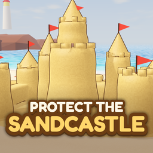

For iPhone and iPad
Protect the Sandcastle
You're a kid on the beach with a shovel, a bucket and one job: keep your sandcastle standing when the tide comes in.
- Dig anywhere, build anywhere. Every scoop really moves the sand: dig moats and channels, pile up walls, dams and ramps, stack stone blocks and wooden crates.
- Real water. At sunset the waves roll in as simulated water that flows wherever the sand is low and washes weak sand away.
- 15 castle levels. Grow your castle from a Sand Heap to the Sand Kingdom.
- Survive day after day. The waves get bigger every day. How many days can you last?